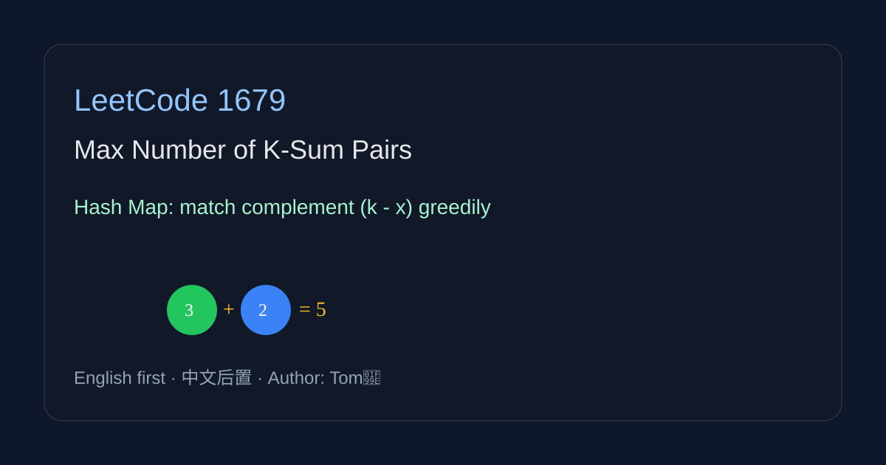

LeetCode 1679: Max Number of K-Sum Pairs (Hash Map Counting)
LeetCode 1679ArrayHash MapToday we solve LeetCode 1679 - Max Number of K-Sum Pairs.
Source: https://leetcode.com/problems/max-number-of-k-sum-pairs/

English
Problem Summary
Given an integer array and integer k, remove pairs that sum to k. Each number can be used at most once. Return the maximum number of operations.
Key Insight
Scan numbers once. For each value x, check if complement k-x is available from previous unmatched numbers. If yes, consume one complement and form a pair. Otherwise store x as waiting.
Complexity Analysis
Time: O(n). Space: O(n).
Reference Implementations (Java / Go / C++ / Python / JavaScript)
class Solution { public int maxOperations(int[] nums, int k) { java.util.Map cnt=new java.util.HashMap<>(); int ans=0; for(int x:nums){ int y=k-x; int c=cnt.getOrDefault(y,0); if(c>0){ ans++; cnt.put(y,c-1); } else cnt.put(x,cnt.getOrDefault(x,0)+1); } return ans; } } func maxOperations(nums []int, k int) int { cnt:=map[int]int{}; ans:=0; for _,x:= range nums { y:=k-x; if cnt[y]>0 { ans++; cnt[y]-- } else { cnt[x]++ } }; return ans }class Solution { public: int maxOperations(vector& nums, int k) { unordered_map cnt; int ans=0; for(int x:nums){ int y=k-x; if(cnt[y]>0){ ans++; cnt[y]--; } else cnt[x]++; } return ans; } }; class Solution:
def maxOperations(self, nums: List[int], k: int) -> int:
cnt = {}
ans = 0
for x in nums:
y = k - x
if cnt.get(y, 0) > 0:
ans += 1
cnt[y] -= 1
else:
cnt[x] = cnt.get(x, 0) + 1
return ansvar maxOperations = function(nums, k) { const cnt = new Map(); let ans = 0; for (const x of nums) { const y = k - x; const c = cnt.get(y) || 0; if (c > 0) { ans++; cnt.set(y, c - 1); } else cnt.set(x, (cnt.get(x) || 0) + 1); } return ans; };中文
题目概述
给定数组 nums 和整数 k，每次可以删除一对和为 k 的数字，每个数字只能使用一次，求最多能执行多少次操作。
核心思路
一次遍历 + 哈希表统计“未配对数字”的出现次数。当前数字为 x 时，看 k-x 是否可用：可用就配对并减少计数，否则把 x 记入等待池。
复杂度分析
时间复杂度 O(n)，空间复杂度 O(n)。
多语言参考实现（Java / Go / C++ / Python / JavaScript）
class Solution { public int maxOperations(int[] nums, int k) { java.util.Map cnt=new java.util.HashMap<>(); int ans=0; for(int x:nums){ int y=k-x; int c=cnt.getOrDefault(y,0); if(c>0){ ans++; cnt.put(y,c-1); } else cnt.put(x,cnt.getOrDefault(x,0)+1); } return ans; } } func maxOperations(nums []int, k int) int { cnt:=map[int]int{}; ans:=0; for _,x:= range nums { y:=k-x; if cnt[y]>0 { ans++; cnt[y]-- } else { cnt[x]++ } }; return ans }class Solution { public: int maxOperations(vector& nums, int k) { unordered_map cnt; int ans=0; for(int x:nums){ int y=k-x; if(cnt[y]>0){ ans++; cnt[y]--; } else cnt[x]++; } return ans; } }; class Solution:
def maxOperations(self, nums: List[int], k: int) -> int:
cnt = {}
ans = 0
for x in nums:
y = k - x
if cnt.get(y, 0) > 0:
ans += 1
cnt[y] -= 1
else:
cnt[x] = cnt.get(x, 0) + 1
return ansvar maxOperations = function(nums, k) { const cnt = new Map(); let ans = 0; for (const x of nums) { const y = k - x; const c = cnt.get(y) || 0; if (c > 0) { ans++; cnt.set(y, c - 1); } else cnt.set(x, (cnt.get(x) || 0) + 1); } return ans; };
Comments